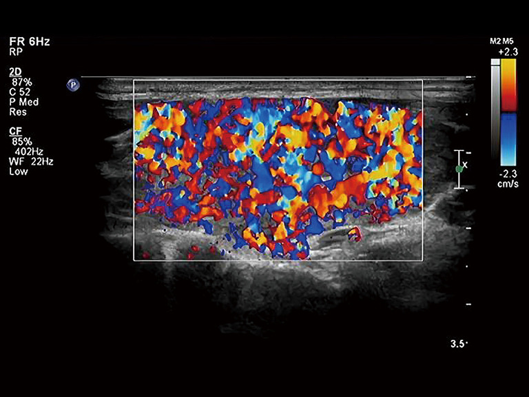
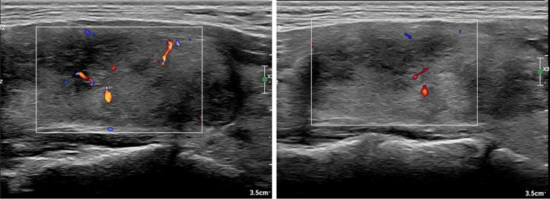
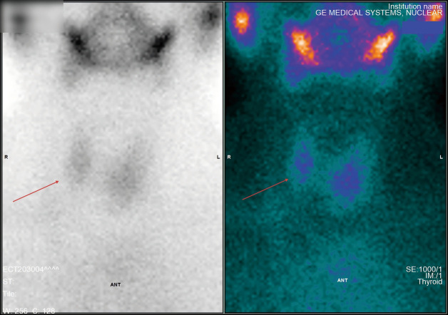

968 — Cường giáp do amiodarone (AIT): type 1 hay type 2 — Doppler màu & xạ hình quyết định thuốc / Amiodarone-induced thyrotoxicosis: type 1 versus type 2
Tags: pattern:cuong-giap pattern:vien-giap pattern:giam-bat-xa pattern:inferno vung:tuyen-giap score:PSV protocol:Doppler protocol:xaq-tuyen-giap
Mức chắc chắn (certainty): tổng hợp y văn (literature synthesis) — số liệu lấy từ các bài open access đã đọc toàn văn: Bai et al., Quant Imaging Med Surg 2025 (PMC12682467, CC BY-NC-ND 4.0 — 628 bệnh nhân, định nghĩa AIT1/AIT2 theo siêu âm + xạ hình, PSV STA); Cappellani et al., J Endocrinol Invest 2024 (PMC10859339, CC BY 4.0 — đối chiếu ETA 2018 vs ATA 2016, liều thuốc, phẫu thuật); Guðjónsson et al., J Intern Med 2025 (PMC12374759, CC BY 4.0 — 262 bệnh nhân Iceland, tỉ lệ tích lũy); Frey et al., Eur Thyroid J 2026 (PMC13097270, CC BY 4.0 — 101 ca cắt toàn bộ tuyến giáp, MACE 5 năm). Bài không có ca nguyên văn riêng của nhóm; ca 1–3 là hình minh họa nguyên văn của PMC12682467, ghi rõ Fig.
Câu hỏi gốc của bài: bệnh nhân 72 tuổi, rung nhĩ, đã dùng amiodarone 200 mg/ngày 14 tháng. Mệt, sụt 4 kg, nhịp nhanh 118 lần/phút, TSH < 0,01 mIU/L, FT4 41 pmol/L. Siêu âm: tuyến giáp to, không nhân, Doppler màu rực lửa toàn tuyến, PSV động mạch giáp trên 132 cm/s; xạ hình 99mTc bắt xạ tăng. Vậy đây là AIT type 1 hay type 2 — và vì sao câu trả lời đổi hẳn thuốc điều trị (methimazole hay prednisone), trong khi FT3/FT4 không giúp phân biệt?
1. Tổng quan — vì sao amiodarone gây hai kiểu cường giáp hoàn toàn khác nhau
A. Bệnh học (pathology) và cơ chế:
- Amiodarone là một "bể iod" gắn vào thuốc chống loạn nhịp: mỗi viên 200 mg chứa 75 mg iod, chuyển hóa giải phóng khoảng 6–7 mg iod vô cơ/ngày — gấp 50–100 lần nhu cầu iod hằng ngày; iod niệu có thể tới 15.000 µg/ngày (PMC12682467). Thời gian bán hủy 40–60 ngày, cá biệt tới 100 ngày; thuốc tích trong mô mỡ và cơ quan nên ảnh hưởng tuyến giáp kéo dài nhiều tuần–nhiều tháng sau khi ngừng, có khi > 6 tháng mới hồi phục (PMC12682467).
- Type 1 — nhiễm độc giáp do iod (Jod–Basedow): iod dư là nguyên liệu tổng hợp hormon trên một tuyến đã có nhân độc/tự trị tiềm ẩn hoặc bệnh Graves ẩn → tăng tổng hợp và phóng thích hormon, giống hệt cường giáp do iod từ cản quang (bài 1898). Nhu mô còn chức năng, nên bắt xạ và tưới máu tăng.
- Type 2 — viêm giáp hủy (destructive thyroiditis): amiodarone và chất chuyển hóa desethylamiodarone gây độc trực tiếp tế bào nang giáp → viêm, hoại tử nang, rò hormon đã tổng hợp sẵn vào máu. Tuyến không tăng tổng hợp, nên bắt xạ mất/giảm và vùng viêm giảm mạch.
- Type hỗn hợp/không xác định (mixed/indefinite): cả hai cơ chế cùng lúc trên tuyến có nhân + viêm; trong loạt 628 người của PMC12682467 có 8 ca mixed trong 80 ca cường giáp (10%).
- Vì sao hình ảnh lại là "trọng tài": xét nghiệm hormon không phân biệt được hai type — trong chính loạt trên, FT3 11,95 vs 12,67 pmol/L, FT4 36,7 vs 38,71 pmol/L, TSH 0,15 vs 0,16 mIU/L (type 1 vs type 2, khác biệt không có ý nghĩa thực hành). Kháng thể TRAb dương gợi Graves nhưng âm không loại trừ type 1; siêu âm bắt đầu và xạ hình xác nhận là con đường duy nhất để chọn thuốc đúng.
- Vì sao Doppler màu phản ánh cơ chế: tưới máu tuyến do VEGF/NO phụ thuộc TSH-receptor → tuyến tổng hợp hormon mạnh thì giãn mạch, tăng lưu lượng (hình "inferno" — toàn tuyến rực màu). Ngược lại, nang giáp bị phá hủy thì vùng viêm giảm tín hiệu mạch, còn mô lành quanh đó vẫn có mạch — tạo hình "vùng giảm mạch khu trú trong nền có mạch". Đây là lý do không được chỉ nhìn "tuyến có màu hay không" mà phải đọc phân bố.
- Vì sao xạ hình 99mTc (pertechnetate) chứ không phải 131I: 99mTc được NIS bắt như iod nhưng không tham gia tổng hợp hormon, nên không bị ảnh hưởng bởi hiện tượng ức chế Wolff–Chaikoff do bể iod; hình chụp 20–30 phút sau tiêm, liều 74–185 MBq (2–5 mCi), đếm 300–500k (PMC12682467). Vì vậy bắt xạ tăng = tuyến đang tổng hợp (type 1), mất bắt xạ = viêm hủy (type 2).
B. Ngưỡng định lượng bắt buộc (cửa 1 Argon):
| Đại lượng | Con số | Ý nghĩa thực hành |
|---|---|---|
| Iod/viên amiodarone 200 mg | 75 mg iod, ~6–7 mg iod vô cơ/ngày, 50–100× nhu cầu | Bể iod khổng lồ, không "rửa" nhanh được |
| Thời gian bán hủy | 40–60 ngày (tới 100 ngày) | Ngừng thuốc không làm AIT biến mất ngay |
| Tần suất AIT | 5–10% người dùng amiodarone (PMC13097270); 9,2% (KTC 5,6–12,7) trong đoàn hệ Iceland, tích lũy 5 năm 19,0% (PMC12374759) | AIT là biến cố phổ biến, không phải ca hiếm |
| Đỉnh năm điều trị | 9,8%/năm ở năm thứ 3 (PMC12374759) | Theo dõi suốt thời gian dùng thuốc, không chỉ 3 tháng đầu |
| Phân bố type (loạt 628) | cường giáp 80/628 (12,74%): type 1 = 32, type 2 = 40, mixed = 8 (PMC12682467) | Type 2 chiếm đa số; mixed ~10% |
| PSV động mạch giáp trên | > 100 cm/s → AIT1; < 45–50 cm/s → AIT2/bình thường (PMC12682467) | Ngưỡng định lượng để chốt type khi Doppler màu mơ hồ |
| Bắt xạ 99mTc | tăng (type 1) / mất–giảm (type 2) | Không dùng RAIU 131I trong bể iod |
| Liều thuốc | methimazole 40–60 mg/ngày (ETA) / 40 mg (ATA); perchlorate ≤ 1 g/ngày, ≤ 4–6 tuần; prednisone 30 mg (ETA) / 40 mg (ATA)/ngày (PMC10859339) | Liều dưới khuyến cáo = không khác gì không điều trị |
| Phẫu thuật | 101 ca cắt toàn bộ tuyến giáp: tử vong chu phẫu 2,0%; MACE 5 năm 61,4% vs 24,0% (LVEF < 40% vs ≥ 40%); tử vong tim 30,8% vs 1,3% (PMC13097270) | Cắt giáp không xóa được nguy cơ tim ở nhóm LVEF thấp |
2. Mẫu hình + chẩn đoán phân biệt theo kiểu bắt xạ/tưới máu (Gamut)
Bước 1 — xác nhận cường giáp thật: TSH bị ức chế + FT4/FT3 tăng, sau loại trừ giả cường giáp (bệnh nặng, heparin, biotin liều cao, kháng thể kháng hormon).
Bước 2 — chia gamut theo cặp "tưới máu × bắt xạ":
- Tưới máu TĂNG toàn tuyến + bắt xạ TĂNG: AIT type 1 (tuyến có nhân/tự trị) · Graves (bướu giáp lan tỏa, có thể TRAb +) · nhân độc/tuyến đa nhân độc (bắt xạ khu trú) · cường giáp do iod khác (cản quang — bài 1898).
- Tưới máu BÌNH THƯỜNG/GIẢM + bắt xạ MẤT–GIẢM: AIT type 2 · viêm giáp bán cấp (de Quervain) (đau cổ, ESR cao) · viêm giáp không đau/yên lặng · viêm giáp sau sinh · viêm giáp Hashitoxicosis · cường giáp giả do dùng hormon (bắt xạ mất, thyroglobulin thấp).
- Tưới máu vùng giảm mạch nằm trong nền có mạch + bắt xạ hỗn hợp: AIT mixed/không xác định — đây là nhóm không được đoán bừa, phải điều trị phối hợp hoặc chờ đáp ứng.
- Bắt xạ tăng ngoài tuyến giáp: struma ovarii, di căn ung thư giáp biệt hóa (bắt xạ ổ bụng/ngực) — hiếm nhưng đổi hoàn toàn hướng xử trí.
Mnemonic "I-A-T": Iod (type 1 — tổng hợp), Apoptosis/viêm (type 2 — hủy), Together (mixed) — đi kèm câu hỏi: tuyến có nhân không, Doppler toàn tuyến hay khu trú, xạ hình còn bắt xạ không?
3. Bảng so sánh phân biệt (ma trận đối chiếu)
| Thực thể (entity) | Hình ảnh điển hình (US / Doppler màu / xạ hình) | Chốt vào (rule-in) | Chốt loại (rule-out) | Gợi ý xác nhận |
|---|---|---|---|---|
| AIT type 1 | Tuyến to, có nhân/đa nhân; Doppler "inferno" toàn tuyến; PSV STA > 100 cm/s; 99mTc bắt xạ tăng | Bể iod + bắt xạ tăng + tưới máu tăng | Bắt xạ mất hoàn toàn + vùng giảm mạch → type 2 | Methimazole 40–60 mg/ngày ± perchlorate ≤ 1 g/ngày, ≤ 4–6 tuần |
| AIT type 2 | Tuyến bình thường/hơi to, không nhân; vùng giảm hồi âm, giảm mạch; PSV STA < 45–50 cm/s; 99mTc mất bắt xạ | Bắt xạ mất + vùng giảm mạch khu trú | Tưới máu tăng lan tỏa + bắt xạ tăng → type 1/Graves | Prednisone 30 mg (ETA)–40 mg (ATA)/ngày, giảm liều 2–3 tháng |
| AIT mixed/không xác định | Có nhân + vùng giảm hồi âm; Doppler hỗn hợp; bắt xạ không đồng nhất | Hai mẫu hình cùng tồn tại | Một mẫu hình thuần nhất | Phối hợp thionamide + corticoid; hoặc thionamide 4–6 tuần rồi thêm corticoid nếu kém đáp ứng |
| Graves | Bướu giáp lan tỏa, hồi âm giảm đều, Doppler tăng; TRAb +; bắt xạ tăng đều | TRAb + + bắt xạ tăng đều + mắt lồi | Bể iod + tuyến có nhân + TRAb âm → AIT1 | Thionamide, 131I, hoặc cắt giáp |
| Viêm giáp bán cấp | Tuyến đau, hồi âm giảm dạng bản đồ, Doppler giảm; bắt xạ mất; ESR/CRP cao | Đau cổ + ESR cao + bắt xạ mất | Không đau + bể iod + amiodarone → AIT2 | NSAID/corticoid, không dùng thionamide |
| Giả cường giáp do hormon ngoại sinh | Tuyến bình thường, Doppler bình thường; bắt xạ mất; thyroglobulin thấp | Bắt xạ mất + thyroglobulin thấp + không bệnh tuyến | Thyroglobulin cao/bướu giáp → bệnh tuyến thật | Ngừng thuốc, hỏi tiền sử |

Hình trái/phải: tuyến giáp tăng sinh mạch lan tỏa kiểu "inferno" trên Doppler màu — mô hình của tăng tổng hợp hormon (type 1). Nguồn: Bai QS et al., Quant Imaging Med Surg 2025 (PMC12682467), Fig. 6, CC BY-NC-ND 4.0 — ảnh nguyên bản, không cắt/ghép.
Vùng giảm hồi âm với tín hiệu mạch thưa bên trong, trong khi mô tuyến lành quanh đó vẫn có mạch — mô hình của viêm hủy nang giáp (type 2). Nguồn: Bai QS et al., Quant Imaging Med Surg 2025 (PMC12682467), Fig. 2, CC BY-NC-ND 4.0.4. Protocol chụp + thuật toán điều trị
A. Siêu âm + Doppler màu (bước 1, làm ngay tại giường):
- Đầu dò linear 7–12 MHz (PMC12682467), đặt dọc/ngang qua thùy phải, trái, eo; đo 3 đường kính và thể tích (công thức ellipsoid: dài × rộng × cao × 0,52), ghi nhân và đặc điểm hồi âm.
- Doppler màu toàn tuyến ở thang vận tốc thấp (PRF 2–3 kHz, gain vừa đủ, không "nhấn" đầu dò) — đọc phân bố chứ không chỉ "có màu"; ghi hình "inferno" nếu toàn tuyến rực màu.
- Doppler xung động mạch giáp trên (STA): cửa sổ 1–2 mm giữa tuyến, góc ≤ 60°, lấy 3 phổ liên tiếp, ghi PSV trung bình; STA được chọn vì nông, dễ lặp lại, ít phụ thuộc người làm (PMC12682467). Ngưỡng: > 100 cm/s nghi type 1; < 45–50 cm/s nghi type 2.
- Không dùng siêu âm một mình để chốt type khi bể iod lớn và tuyến không nhân — luôn ghép xạ hình.
B. Xạ hình tuyến giáp 99mTc-pertechnetate (bước 2):
- 74–185 MBq (2–5 mCi) tiêm tĩnh mạch, chụp tĩnh 20–30 phút sau tiêm, collimator năng lượng thấp, mặt trước, 300–500k counts (PMC12682467).
- Đọc: bắt xạ tăng (type 1) · mất/giảm (type 2) · không đồng nhất (mixed/nhân độc).
- Tránh 131I/RAIU khi bể iod lớn: kết quả thường thấp ở cả hai type, dễ đọc nhầm type 2.
C. Thuật toán chọn thuốc (theo ETA 2018/ATA 2016, qua PMC10859339):
flowchart TD
A[TSH thấp + FT4/FT3 cao trên nền amiodarone] --> B[Siêu âm + Doppler màu toàn tuyến + PSV STA]
B --> C{Xạ hình 99mTc}
C -->|Bắt xạ TĂNG| D[AIT type 1]
C -->|Mất hoặc giảm bắt xạ| E[AIT type 2]
C -->|Không đồng nhất / Doppler hỗn hợp| F[AIT mixed hoặc không xác định]
D --> G[Methimazole 40-60 mg/ngày ± perchlorate ≤ 1 g/ngày ≤ 4-6 tuần]
E --> H[Prednisone 30-40 mg/ngày, giảm liều 2-3 tháng]
F --> I[Phối hợp thionamide + corticoid]
G --> J{Đáp ứng sau 4-6 tuần?}
H --> J
I --> J
J -->|Kém, bệnh tim nặng, LVEF dưới 40%| K[Cắt toàn bộ tuyến giáp sớm; cầu nối plasmapheresis/iopanoic acid]
J -->|Tốt| L[Theo dõi FT4/FT3 mỗi 4-6 tuần, giảm liều theo đáp ứng]
D. Ngưỡng xử trí và bằng chứng ngoại khoa:
- Không ngừng amiodarone một cách máy móc: quyết định ngừng hay tiếp tục phải bàn với tim mạch; ngừng thuốc không làm hết AIT ngay do bể iod và thời gian bán hủy dài (PMC12682467).
- Liều thấp hơn khuyến cáo = vô hiệu: một nghiên cứu thực hành cho thấy điều trị dưới liều tương đương không điều trị về kiểm soát cường giáp và biến cố tim (PMC10859339) — đây là lỗi hay gặp khi "sợ" methimazole ở người già.
- Cắt toàn bộ tuyến giáp khi: kháng trị, không thể ngừng amiodarone, hoặc bệnh tim nặng. Số liệu 101 ca: tử vong chu phẫu 2,0%, biến chứng 7,8–11,8%; ở LVEF < 40%, MACE 5 năm 61,4% vs 24,0% và tử vong tim 30,8% vs 1,3% so với LVEF ≥ 40% (PMC13097270). Mổ sớm khi còn nhiễm độc giáp ở nhóm LVEF < 40% có tử vong chu phẫu 0% vs 40% nếu chờ hồi phục sinh hóa (PMC10859339) — chờ "euthyroid" ở nhóm này có thể là sai lầm chết người.
- Cầu nối trước mổ: plasmapheresis, iopanoic acid, cholestyramine khi cần mổ mà bệnh nhân còn nhiễm độc nặng (các ca trong PMC13010327/PMC13015783 — dẫn link, không trích số).
5. Biến thể bình thường và cạm bẫy
- Bể iod làm RAIU thấp ở CẢ HAI type — đây là cạm bẫy số 1: thấy "bắt xạ thấp" rồi kết luận type 2 trong khi tuyến vẫn có nhân và Doppler rực lửa. Luôn đọc Doppler trước, xạ hình sau.
- "Inferno" không phải đặc quyền của AIT1: Graves, bướu giáp nhiễm độc, thậm chí viêm giáp giai đoạn hồi phục đều có thể tăng mạch. Bối cảnh amiodarone + nhân + TRAb mới định hướng.
- Tuyến không nhân không loại trừ type 1: vùng tự trị có thể nhỏ, không thấy trên siêu âm thường; nếu xạ hình tăng khu trú mà siêu âm "sạch", vẫn là type 1.
- Type 2 có thể chuyển thành suy giáp sau nhiều tháng — không dùng liều thionamide kéo dài "để chắc", vì sẽ đẩy bệnh nhân sang suy giáp iatrogenic.
- Mixed/không xác định không được "đoán bừa" theo xạ hình: phối hợp thuốc có nhiều biến cố hơn (đặc biệt tổn thương tủy do thionamide: 1,35% vs 0,14% so với cường giáp khác) (PMC10859339) — chỉ dùng khi thật sự có bằng chứng hai cơ chế.
- Corticoid liều thấp trong type 2 làm chậm hồi phục và kéo dài nhiễm độc; taper quá nhanh gây tái phát — cần 2–3 tháng và theo FT4/FT3.
- Đừng quên ổ nhịp: kiểm soát tần số bằng chẹn beta thận trọng (có thể tụt huyết áp ở bệnh tim nặng); không dùng chẹn beta không chọn lọc ở người có co thắt phế quản.
- Cản quang iod gần đây (bài 1898) có thể tạo Jod–Basedow giống hệt type 1 — hỏi kỹ lịch chụp CT trong 2–3 tháng trước.
6. Tự lượng giá — Blind Quiz
Ca 1 — Nam 68 tuổi, rung nhĩ, amiodarone 18 tháng. Sụt cân, run tay, nhịp nhanh. Nhìn Doppler màu trước, mô tả phân bố mạch.
- Gợi ý lâm sàng: đang dùng thuốc chống loạn nhịp chứa iod; tuyến to đều, không nhân rõ.
- Câu hỏi: Mạch tăng toàn tuyến hay khu trú? Cần thêm xạ hình gì để chốt type? Hai chẩn đoán phân biệt hàng đầu?
Bấm để hiện đáp án (findings + chẩn đoán)
- Dấu hiệu: tăng sinh mạch lan tỏa toàn tuyến — hình "inferno"; kèm tuyến to, không nhân.
- Chẩn đoán: AIT type 1 (tăng tổng hợp do iod) — vì mô tuyến còn chức năng và tăng tưới máu; xác nhận bằng xạ hình 99mTc bắt xạ tăng và PSV STA > 100 cm/s.
- Phân biệt: Graves (TRAb +, bướu lan tỏa) và viêm giáp bán cấp (đau, ESR cao, bắt xạ mất).
- Nguồn ảnh: Bai QS et al., Quant Imaging Med Surg 2025 (PMC12682467), Fig. 6, CC BY-NC-ND 4.0.
Ca 2 — Nữ 74 tuổi, amiodarone 2 năm, mệt và sụt cân. Siêu âm thấy một vùng giảm hồi âm; Doppler màu đặt trên vùng đó.
- Gợi ý: không đau cổ, không sốt; FT4 tăng nhẹ; tuyến không có nhân đặc.
- Câu hỏi: Vì sao vùng giảm hồi âm lại giảm mạch trong khi mô quanh còn mạch? Type nào? Thuốc đầu tay?
Bấm để hiện đáp án (findings + chẩn đoán)
- Dấu hiệu: vùng giảm hồi âm, giảm tín hiệu mạch bên trong, mô tuyến lành quanh còn mạch — mô hình viêm hủy nang giáp.
- Chẩn đoán: AIT type 2 — vì nang giáp bị phá hủy, không còn tổng hợp nên không tăng mạch và mất bắt xạ; điều trị prednisone 30–40 mg/ngày giảm liều 2–3 tháng, không dùng thionamide.
- Nguồn ảnh: Bai QS et al., Quant Imaging Med Surg 2025 (PMC12682467), Fig. 2, CC BY-NC-ND 4.0.
Ca 3 — Nữ 61 tuổi, amiodarone 1 năm, FT4 38 pmol/L, TSH 0,02. Xạ hình 99mTc: tuyến giáp gần như không thấy, chỉ thấy tuyến nước bọt.

- Gợi ý: không đau cổ; siêu âm tuyến hơi to, hồi âm không đồng nhất.
- Câu hỏi: Bắt xạ mất nói lên điều gì về cơ chế? Có loại trừ được type 1 hoàn toàn bằng hình này không?
Bấm để hiện đáp án (findings + chẩn đoán)
- Dấu hiệu: tuyến giáp mất bắt xạ, hình chỉ còn tuyến nước bọt và mô mềm cổ.
- Chẩn đoán: AIT type 2 (viêm hủy) — hormon thoát ra từ nang bị phá hủy, không cần tổng hợp mới.
- Phản biện: bể iod có thể làm giảm bắt xạ ở cả type 1, nên hình này chỉ có giá trị khi ghép Doppler (không có "inferno", PSV thấp); nếu Doppler tăng lan tỏa mà xạ hình mất bắt xạ, phải xếp mixed/không xác định và không được dùng thionamide đơn thuần.
- Nguồn ảnh: Bai QS et al., Quant Imaging Med Surg 2025 (PMC12682467), Fig. 5, CC BY-NC-ND 4.0.
Bài liên quan chéo
- 700 – Tổng quan Đầu Mặt Cổ
- 230 – Tuyến giáp & hạch cổ (TI-RADS)
- 940 – Đốt nhiệt nhân giáp độc (RFA vs 131I)
- 941 – Đốt tuyến cận giáp
- 1898 – Nhiễm độc giáp do iod sau cản quang (Jod–Basedow)
- 933 – An toàn thuốc cản quang
Không dùng để chẩn đoán độc lập khi chưa có người hướng dẫn.